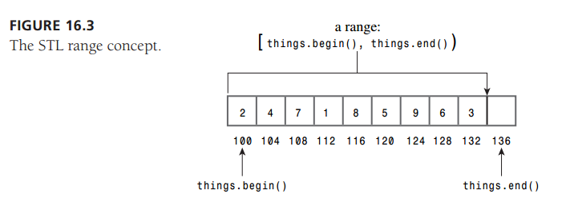

1027
关于 for 循环的作用域
|
|
编译该c++程序时出现如下错误：
|
|
出错原因是当前的g++编译器中 for 循环的作用域是当前 for循环，所以上面定义的int i = 0在下面的for循环中是无法使用的，需要重新定义变量i。也可以按照提示中更改g++编译器参数来忽略该错误。
c++从控制台读入多个参数
|
|
vector
It’s important that you understand how the STL defines ranges using two iterators. The first iterator refers to the beginning of the range, and the second iterator is one beyond the end of the range. For example,
|
|
Remember
A range [it1, it2) is specified by two iterators it1 and it2, and it runs from it1 up to, but not including it2
vector 中两个迭代器it1和it2的作用范围和 python 中range方法相同，均为左闭右开区间[it1, it2)。

下面的代码展示了 vector 模板类提供方法（begin(), end(), size(), erase(), push_back(), swap(), insert()）的使用样例：：
|
|
输出：
|
|
错题本
以下选项中不属于C语言程序运算符的是？
A. sizeof
B. < >
C. ( )
D. &&
正确答案: B 我的答案: A (错误)
解析:
C的运算符有以下几类：
1.算术运算符：* - + /
2.关系运算符： > < == != >= <=
3.逻辑运算符：! && ||
4.位运算符：<< >> ~ | ^ &
5.赋值运算符：=及扩展赋值运算符
6.条件运算符：?:
7.逗号运算符：,
8.指针运算符：*和&
9.求字节数运算符：sizeof
10.强制类型转换运算符：(类型)
11.分量运算符：. ->
12.下标运算符：[ ]
13.其他：如函数调用运算符:()
注意：条件运算符是C语言中惟一一个三目(三元)运算符
重载：
只有在同一类定义中的同名成员函数才存在重载关系 ，主要特点是函数的参数类型和数目有所不同，但不能出现函数参数的个数和类型均相同，仅仅依靠返回值类型不同来区分的函数，这和普通函数的重载是完全一致的。另外，重载和成员函数是否是虚函数无关
覆盖：
在派生类中覆盖基类中的同名函数，要求两个函数的参数个数、参数类型、返回类型都相同，且基类函数必须是虚函数。隐藏：
派生类中的函数屏蔽了基类中的同名函数，2个函数参数相同，但基类函数不是虚函数（和覆盖的区别在于基类函数是否是虚函数）。2个函数参数不同，无论基类函数是否是虚函数，基类函数都会被屏蔽（和重载的区别在于两个函数不在同一类中）。
下面有关malloc和new，说法错误的是？
A. new 建立的是一个对象， malloc分配的是一块内存.
B. new初始化对象，调用对象的构造函数，对应的delete调用相应的析构函数，malloc仅仅分配内存，free仅仅回收内存.
C. new和malloc都是保留字，不需要头文件支持.
D. new和malloc都可用于申请动态内存，new是一个操作符，malloc是是一个函数.
正确答案: C 我的答案: A (错误)
解析：
new/delete都是要分两步操作的：new分配内存，并且调用对象的构造函数初始化一个对象；delete调用相应的析构函数，然后释放内存
malloc/free只是分配内存/回收内存， 所以A、B对；
malloc需要头文件”stdlib.h”或者”malloc.h” C错；
new/delete都是内建的操作符，而malloc是一个函数，其函数原型是：void *malloc(unsigned int num_bytes);
以下选项中不属于C语言标识符的是？
A. 常量
B. 用户标识符
C. 关键字
D. 预定义标识符
正确答案: A 我的答案: C (错误)
解析:
C语言中的标识符有：关键字、预定义标识符、用户标识符
下面不是面向对象的基本原则的是？
|
|
正确答案: C 我的答案: E (错误)
解析):
s( Single-Resposibility Principle ): 单一职责原则
o( Open-Closed principle ): 开放封闭原则
l( Liskov-Substituion Principle ): 里氏原则
i( Interface-Segregation Principle ): 接口隔离原则
d( Dependecy-Inversion Principle ): 依赖倒置原则
| Initial | Concept |
|---|---|
| S | Single responsibility principle: “a class should have only a single responsibility” (i.e. changes to only one part of the software’s specification should be able to affect the specification of the class) |
| O | Open/closed principle: “software entities … should be open for extension, but closed for modification.” |
| L | Liskov substitution principle: “objects in a program should be replaceable with instances of their subtypes without altering the correctness of that program.” |
| I | Interface segregation principle: “many client-specific interfaces are better than one general-purpose interface.” |
| D | Dependency inversion principle: “one should “depend upon abstractions, [not] concretions.” |
程序的完整编译过程分为是：预处理，编译，汇编等，如下关于编译阶段的编译优化的说法中不正确的是（）?
A. 死代码删除指的是编译过程直接抛弃掉被注释的代码
B. 函数内联可以避免函数调用中压栈和退栈的开销
C. For循环的循环控制变量通常很适合调度到寄存器访问
D. 强度削弱是指执行时间较短的指令等价的替代执行时间较长的指令
正确答案: A 我的答案: C (错误)
解析:
死代码的含义是指永远不会被执行到或者执行了不起实际作用的代码段，而不是直接抛弃被注释的代码
比如:while(false){}
面哪些调用转换支持可变长度参数
A. cdecl
B. stdcall
C. pascal
D. fastcal
正确答案: A 我的答案: B (错误)
解析:
cdecl fastcall与stdcall，三者都是调用约定(Calling convention)，它决定以下内容：1)函数参数的压栈顺序，2)由调用者还是被调用者把参数弹出栈，3)以及产生函数修饰名的方法。
1、stdcall调用约定：函数的参数自右向左通过栈传递，被调用的函数在返回前清理传送参数的内存栈。
2、_cdecl是C和C++程序的缺省调用方式。每一个调用它的函数都包含清空堆栈的代码，所以产生的可执行文件大小会比调用_stdcall函数的大。函数采用从右到左的压栈方式。注意：对于可变参数的成员函数，始终使用cdecl的转换方式。
3、fastcall调用约定：它是通过寄存器来传送参数的（实际上，它用ECX和EDX传送前两个双字（DWORD）或更小的参数，剩下的参数仍旧自右向左压栈传送，被调用的函数在返回前清理传送参数的内存栈）。
4、thiscall仅仅应用于”C++”成员函数。this指针存放于CX寄存器，参数从右到左压。thiscall不是关键词，因此不能被程序员指定。
5、nakedcall采用1-4的调用约定时，如果必要的话，进入函数时编译器会产生代码来保存ESI，EDI，EBX，EBP寄存器，退出函数时则产生代码恢复这些寄存器的内容。naked call不产生这样的代码。naked call不是类型修饰符，故必须和_declspec共同使用。
1028
Vector 的其他方法
主要介绍了三种具有代表性的 STL 方法：for_each(), random_shuffle(), sort()。
for_each()
for_each()方法可以用于所有的容器类，它接收三个参数，前两个参数为迭代器，确定一个容器的范围，最后一个参数是一个方法，该方法作用于确定范围内每一个实体。例如：
|
|
random_shuffle()
random_shuffle()方法接收两个迭代器作为参数，将该范围内的元素随机排列生产一个新的容器，该方法要求容器支持随机存取。例如：
|
|
sort()
sort()方法用于将给定容器按照升序进行排列，使用内建方法 operator<()进行比较。如果想要对自定义对象使用sort()方法，需要用户自己实现operator<()方法。例如：
|
|
此外，该方法还有一个重载形式，sort(it1, it2, func)，传入两个迭代器用于确定排序范围，第三个参数代替operator<作为排序规则。例如：
|
|
Linux shell脚本中的 cd 命令不起作用
脚本的作用是切换到某一目录：
|
|
但是在终端执行后没有任何反应。Google后才知道是因为脚本调用了一个子shell，在子shell中执行该命令对当前shell没有影响。解决方法:
|
|
错题本
“引用”与多态的关系？
A. 两者没有关系
B. 引用可以作为产生多态效果的手段
C. 一个基类的引用不可以指向它的派生类实例
D. 以上都不正确
正确答案: B 我的答案: A (错误)
解析:
引用是除指针外另一个可以产生多态效果的手段。这意味着，一个基类的引用可以指向它的派生类实例。
下面说法正确的是（）
A. C++已有的任何运算符都可以重载
B. const对象只能调用const类型成员函数
C. 构造函数和析构函数都可以是虚函数
D. 函数重载返回值类型必须相同
正确答案: B 我的答案: C (错误)
解析:
A，普通的运算符可以重载，特殊的不能重载，比如 . :: 等
B，coust是常对象，也就是不改变成员变量的值，而成员函数中只有const函数可以确保不改变成员变量的值
C，析构函数一般定义为虚函数，构造函数不能是虚函数
D，重载只要求函数名相同，参数类型和个数不同，不要求返回值类型
Which of the following statements are true?
A. We can create a binary tree from given inorder and preorder traversal sequences.
B. We can create a binary tree from given preorder and postorder traversal sequences.
C. For an almost sorted array, insertion sort can be more effective than Quicksort.
D. Suppose T(n) is the runtime of resolving a problem with n elements, T(n) = Θ(1) if n = 1; T(n) = 2T(n/2) + Θ(n) if > 1; so T(n) is Θ(n log n).
E. None of the above.
正确答案: A C D 我的答案: E (错误)
解析:
常见算法
| 折半搜索 |  |
 |
情形二（k = 0） |
|---|---|---|---|
| 二叉树遍历 |  |
 |
情形一 |
| 归并排序 |  |
 |
情形二（k = 0） |
以下哪些做法是不正确或者应该极力避免的：【多选】（ ）
A. 构造函数声明为虚函数
B. 派生关系中的基类析构函数声明为虚函数
C. 构造函数中调用虚函数
D. 析构函数中调用虚函数
正确答案: A C D 我的答案: D (错误)
解析:
先析构子类再析构父类，如果父类析构函数有虚函数，会导致调用子类的已经析构的内容。
先构造父亲类再构造子类，如果父类构造函数有虚函数，会导致调用子类还没构造的内容。
所谓虚函数就是多态情况下只执行一个,而从继承的概念来讲,总是要先构造父类对象,然后才能是子类对象,如果构造函数设为虚函数,那么当你在构造父类的构造函数时就不得不显示的调用构造,还有一个原因就是为了防错,试想如果你在子类中一不小心重写了个跟父类构造函数一样的函数,那么你的父类的构造函数将被覆盖,也即不能完成父类的构造.就会出错.
在构造函数不要调用虚函数。在基类构造的时候，虚函数是非虚，不会走到派生类中，既是采用的静态绑定。显然的是：当我们构造一个子类的对象时，先调用基类的构造函数，构造子类中基类部分，子类还没有构造，还没有初始化，如果在基类的构造中调用虚函数，如果可以的话就是调用一个还没有被初始化的对象，那是很危险的，所以C++中是不可以在构造父类对象部分的时候调用子类的虚函数实现。但是不是说你不可以那么写程序，你这么写，编译器也不会报错。只是你如果这么写的话编译器不会给你调用子类的实现，而是还是调用基类的实现。在析构函数中也不要调用虚函数。在析构的时候会首先调用子类的析构函数，析构掉对象中的子类部分，然后在调用基类的析构函数析构基类部分，如果在基类的析构函数里面调用虚函数，会导致其调用已经析构了的子类对象里面的函数，这是非常危险的。